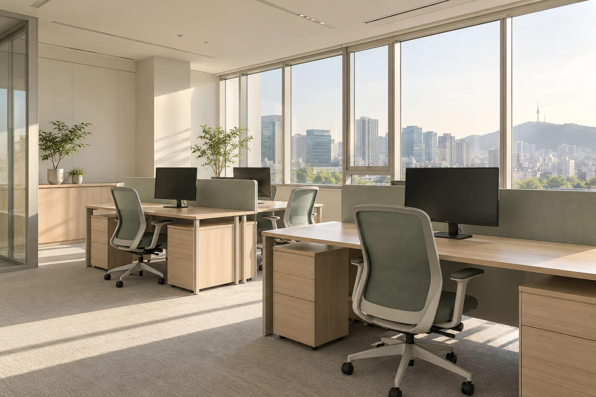
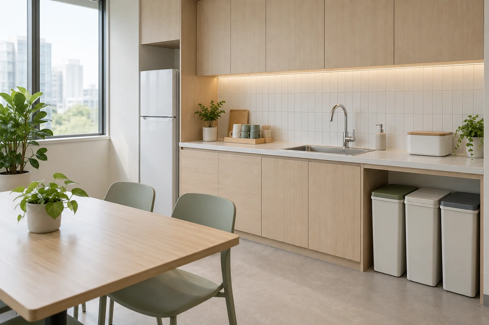
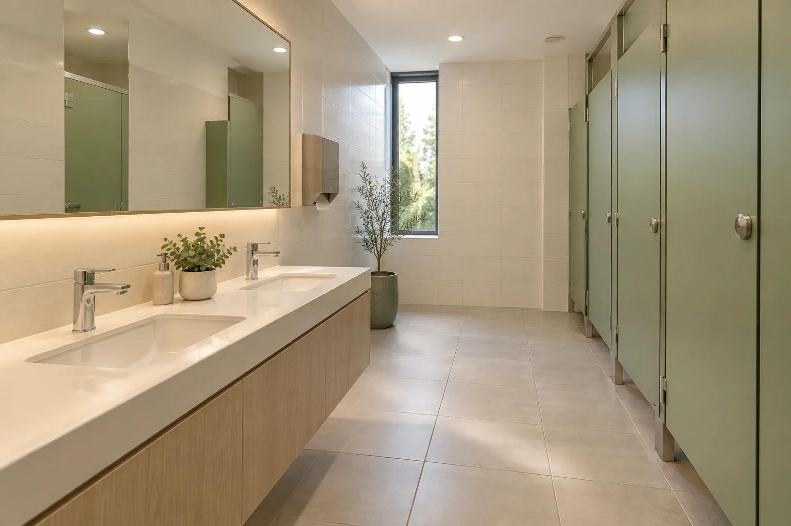
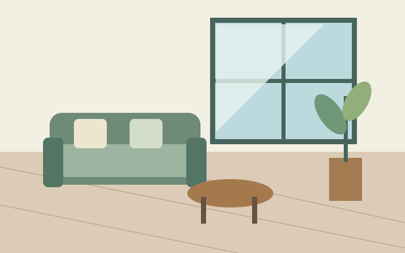
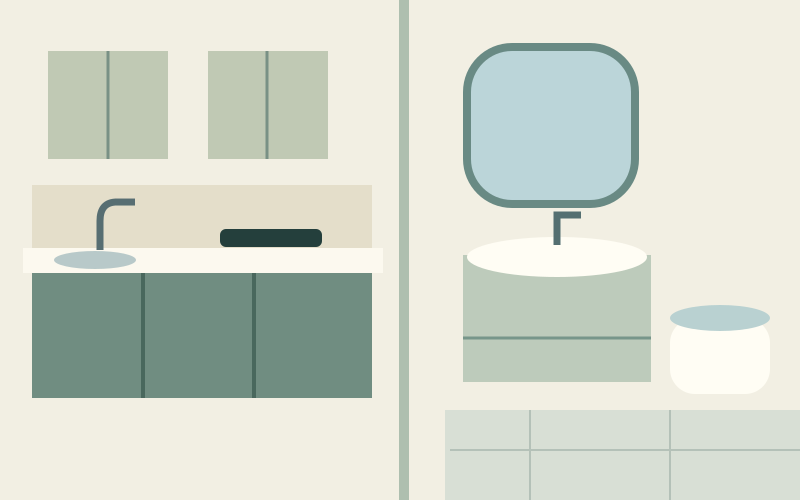
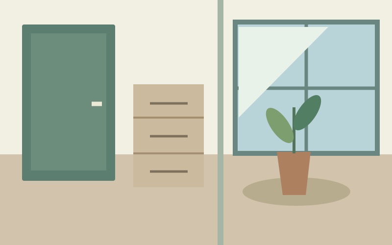
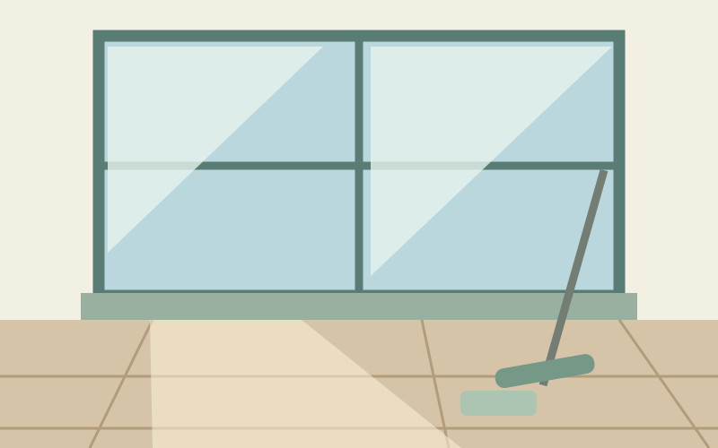

사전에 요청할 작업
- 분리수거 배출 장소와 시간
- 냉장고 내부 정리 및 폐기 기준
- 창틀·인접한 추가 구역의 청소
- 개인 물품 주변과 제한 구역의 작업
실적 수치가 아닌 이 데모의 서비스·작업 구성입니다.
오피스 · 사업장 정기청소
바닥, 탕비실, 화장실, 이동 동선.
사용 인원과 방문 주기에 맞춰 관리 구역을 정합니다.

일하는 자리의 먼지와 바닥부터 정리합니다.

함께 사용하는 휴식 공간을 쾌적하게 유지합니다.

사용 빈도가 높은 구역을 빠짐없이 확인합니다.
자주 방문하는 소규모 공간. 바닥·휴지통 등 유지관리 위주로 범위를 정합니다.
업무 공간과 탕비실·단독 화장실을 묶어 계획합니다. 사용 인원과 주기를 함께 확인합니다.
층수·회의실 수·동선이 많으면 방문 인원과 시간을 따로 검토합니다. 필요 시 현장 확인을 먼저 합니다.
도구·세제·소모품 준비 주체, 출입 담당자, 보안 절차와 작업 가능 시간은 상담에서 정합니다. 요금·인원·일정은 예시가 아닌 실제 현장 조건을 확인한 뒤 협의합니다.
서비스와 규모에 따른 예시 요금입니다.
기본 범위와 추가 작업은 상담에서 함께 확인합니다.
| 공간 규모 | 예시 요금 | 기본 안내 |
|---|---|---|
| 9평 이하 | 14만–18만원 | 원룸·소형 공간 |
| 10–18평 | 18만–25만원 | 방·주방·욕실 확인 |
| 19–28평 | 25만–33만원 | 공간별 기본 청소 |
| 29–39평 | 33만–44만원 | 면적·욕실 수 확인 |
| 40평 이상 | 현장 확인 후 안내 | 규모·작업 범위 협의 |
| 이용 시간 | 예시 요금 | 기본 안내 |
|---|---|---|
| 2시간 | 4만–6만원 | 작은 공간의 생활청소 |
| 3시간 | 6만–8만원 | 주방·욕실·바닥 중심 |
| 4시간 | 8만–11만원 | 구역별 생활청소 |
| 집중청소 | 상담 후 안내 | 오염·집기 상태 확인 |
| 1회 이용 시간 | 예시 요금 | 기본 안내 |
|---|---|---|
| 2시간 | 5만–7만원 | 소규모 사업장 |
| 3시간 | 7만–10만원 | 탕비실·바닥·단독 욕실 |
| 4시간 | 10만–14만원 | 구역과 작업량 확인 |
| 정기 관리 | 범위·주기 협의 | 방문 횟수에 따른 계획 안내 |
가상 업체의 설명용 예시이며 확정 견적이 아닙니다. 부가세 포함 기준입니다. 지역·면적·욕실 수·오염도·작업일에 따라 달라질 수 있고, 외창·곰팡이·접착제 제거 등 별도 작업은 사전에 협의합니다. 정기청소 표의 금액은 1회 기준입니다.
탭을 누르면 공간 이미지와 작업 목록이 바뀝니다.
포함되는 청소와 별도 협의 작업을 나눠 안내합니다.

머무는 공간의 먼지를 차근차근 걷어냅니다.

손이 자주 닿는 곳부터 물이 고이는 곳까지.

집의 첫인상과 바깥에 가까운 공간을 정돈합니다.

빛이 드는 창부터 발이 닿는 바닥까지 확인합니다.
입주·이사청소의 비어 있는 공간을 기준으로 한 데모 범위입니다. 재질과 현장 상태에 따라 작업을 조정하며, 거주·사업장 청소는 상담 시 범위를 따로 정합니다.
집에도, 일하는 곳에도.
필요한 청소의 범위를 먼저 이야기합니다.
짐이 들어오기 전, 다음 일상을 준비하는 청소
별도 협의: 외창, 심한 곰팡이, 접착제 제거
이 서비스 상담 준비하기 ↗살고 있는 집에, 다시 여유가 생기도록
별도 협의: 가구 이동, 가전 분해, 정리수납
이 서비스 상담 준비하기 ↗문을 여는 순간부터 쾌적한 업무 공간
별도 협의: 고소 작업, 카펫 장비 청소, 공용 공간
이 서비스 상담 준비하기 ↗작업 전에는 범위를, 작업 후에는 결과를.
맡기는 동안의 궁금함도 함께 덜어드리는 방식입니다.
시작 전 범위부터 마지막 검수까지.
작업의 기준이 눈에 보이도록.
공간·면적·오염 상태와 요청을 듣습니다.
포함 작업과 별도 작업을 나눠 설명합니다.
작업 전 재질·손상·주의 구역을 확인합니다.
협의한 범위를 따라 작업합니다.
청소 결과와 남은 관리 포인트를 확인합니다.
입주 준비부터 매일의 공간 관리까지.
필요한 질문을 골라 확인하세요.
신축은 공사 후 남은 먼지·분진과 표면 오염을, 구축은 생활 흔적과 묵은 오염을 중심으로 살펴봅니다. 같은 면적이라도 오염 상태와 수납공간 수에 따라 작업이 달라집니다. 짐이 들어오기 전의 빈 공간 기준으로 범위를 정리합니다.
짐과 가구가 있는 공간은 거주청소로 상담합니다. 노출된 바닥과 표면을 중심으로 작업하며 가구 이동, 물품 정리, 수납장 내부는 별도로 확인합니다. 귀중품과 깨지기 쉬운 물건은 미리 보관해 주세요.
짐 반입과 청소 시간이 겹치지 않는 일정이 좋습니다. 여유가 있다면 짐을 들이기 전날이나 공사 마감 이후에 시간을 확보해 주세요. 당일 진행은 면적·반입 시간·작업량을 함께 확인한 뒤 협의합니다.
면적뿐 아니라 욕실·베란다·수납장 수, 오염 상태, 짐 유무를 함께 살펴 정합니다. 사진과 요청 항목을 상담 전에 준비하면 일정과 인원 안내가 쉬워집니다. 예시 요금표의 금액만으로 작업 시간이나 인원이 확정되지는 않습니다.
수도·전기 사용 가능 여부, 출입 방식, 주차와 엘리베이터 이용을 확인해 주세요. 빈 수납장과 보관할 물건을 구분하고, 손상된 부분이나 재질상 주의할 곳은 미리 알려주세요. 입주 일정과 인테리어 공사 종료 시점도 함께 전달하면 좋습니다.
공간별 탭의 기본 항목을 먼저 확인해 주세요. 보호필름·접착제, 심한 곰팡이·기름때, 다수의 수납장, 공사 분진 등은 작업량 확인이 필요합니다. 필요한 경우 사진과 현장 상태를 보고 추가 범위와 비용을 작업 전에 협의합니다.
기본 범위는 안전하게 접근 가능한 창 안쪽과 가전 외부 표면입니다. 외창·높은 곳·창문 탈거, 가전 내부 분해는 기본 청소에 포함되지 않습니다. 재질과 안전 조건에 맞는 별도 서비스가 필요한지 상담에서 확인합니다.
범위 확인 → 조건 안내 → 현장 점검 → 구역별 청소 → 함께 검수 순으로 안내합니다. 현장에서는 위쪽의 먼지가 아래로 떨어지는 점과 공간의 사용 동선을 고려해 청소 순서를 정합니다. 완료 후 요청한 구역을 다시 확인합니다.
작업 종료 시 함께 확인하고, 추가로 살펴볼 부분은 위치와 사진을 정리해 담당자에게 전달하는 방식을 제안합니다. 보완 작업의 범위·신청 기한·손상 처리 기준은 계약 전에 확인해야 합니다. 이 가상 데모에는 확정된 보증·보험 조건이 없습니다.
업무 공간, 탕비실, 단독 화장실과 지정된 동선을 기준으로 방문 계획을 상담합니다. 소규모 사무실·학원·매장처럼 운영 환경이 다른 공간은 사용 인원과 청소 가능한 시간을 함께 확인합니다. 의료·조리 등 전문 관리 구역은 별도 기준이 필요합니다.
현장 비치 도구를 사용할지, 도구를 가져오는 작업인지 상담 시 정합니다. 청소기·걸레·세제·쓰레기봉투의 준비 주체와 보관 위치를 함께 확인해 주세요. 바닥 재질과 사용할 수 없는 약품도 미리 안내하면 좋습니다.
영업·근무 시간과 겹치지 않는 방문 시간을 협의합니다. 출입 담당자, 보안 절차, 청소 가능한 구역, 도구 위치와 쓰레기 배출 장소를 사전에 정해야 합니다. 공개 상담 메모에는 상세 주소나 출입 비밀번호를 입력하지 마세요.
개인 서류·물품·모니터 케이블은 임의로 옮기거나 정리하지 않습니다. 냉장고 내부, 분리수거 배출, 공유 구역처럼 판단이 필요한 작업은 사전 요청과 담당자 확인이 필요합니다. 보관하거나 폐기할 물건의 기준도 미리 정해 주세요.
방문 주기·작업 구역·회당 시간·도구 준비·추가 작업·변경 조건을 서면으로 정리하는 방식을 제안합니다. 결제 수단, 견적서와 증빙 발급 여부는 실제 계약 전에 담당자와 확인해야 합니다. 이 데모는 접수·결제·증빙 발급을 하지 않습니다.
가상 업체의 서비스 안내 시안입니다. 서비스·면적·희망일·요청사항을 상담 메모로 만들고 복사할 수 있으며, 외부 서버로 보내거나 실제 예약·결제를 진행하지 않습니다.
틈새온 가상 업체의 안내 예시입니다. 실제 서비스 범위와 계약 조건은 상담 시 확정합니다.
상담을 준비하는 네 가지 정보
무엇을 맡기면 될지 막막할 때.
공간과 요청을 정리하면 상담이 쉬워집니다.
가상 업체 데모 · 연락처를 수집하거나 전송하지 않습니다. 상세 주소나 출입 비밀번호는 입력하지 마세요.